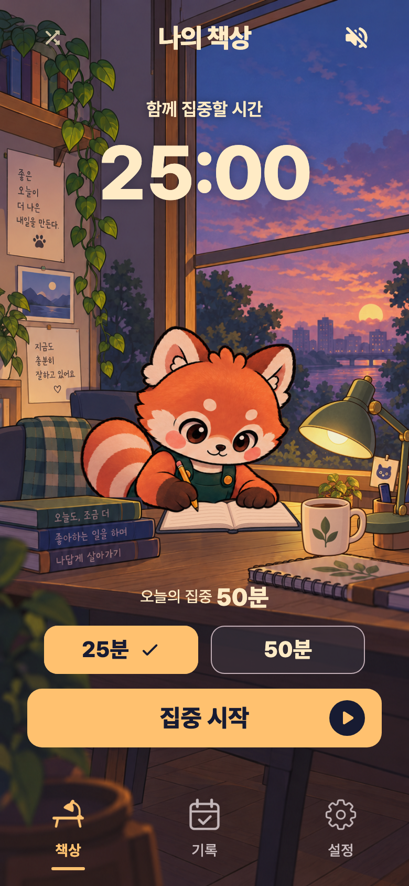

필기 중에는 얼굴·몸통·꼬리를 기본 그림으로 유지하고, 연결된 팔과 연필의 작은 동작을 보여줍니다. 필기 왕복 4초, 페이지 넘김 5.5초의 속도는 그대로입니다.
36초 필기와 5.5초 페이지 넘김을 합친 전체 주기는 41.5초입니다. 앱과 같은 Flutter 렌더러에서 그린 미리보기이며, 에뮬레이터의 실시간 화면 녹화는 아닙니다. 재생 속도는 1배입니다.

제작 원화·프롬프트·검증 기록